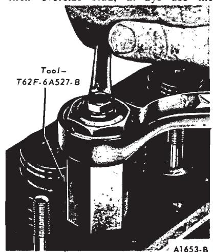
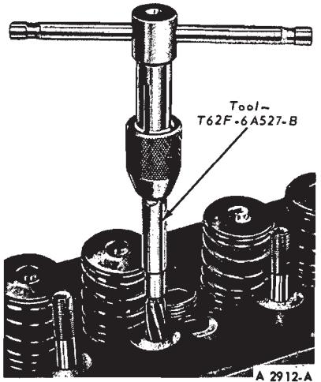
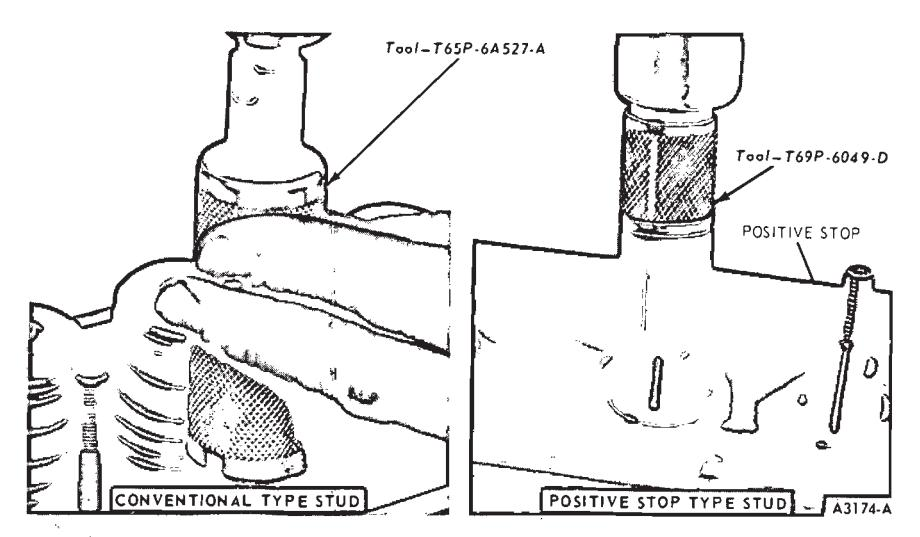
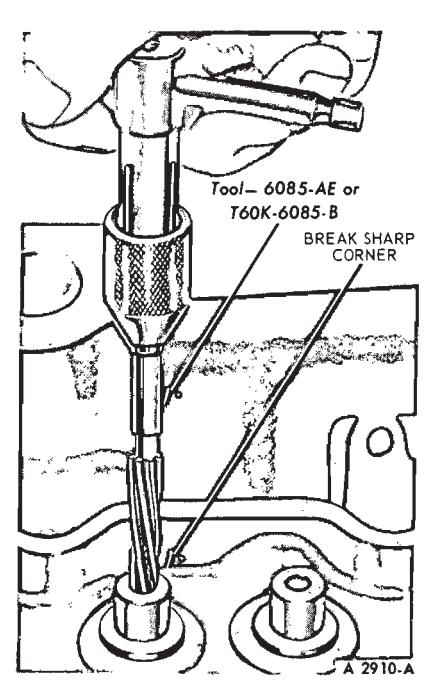
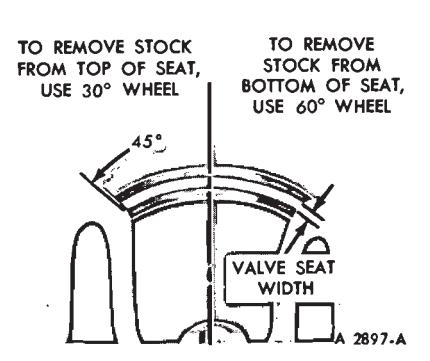
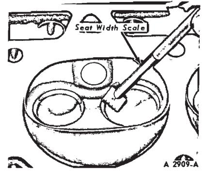
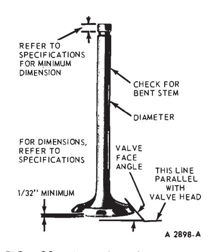

General Engine Service · 21-01-22
Valve Rocker Arm and/or Shaft Assembly
Dress up minor surface defects on the rocker arm shaft and in the rocker arm bore with a hone (170, 200, 250 Six, 390, 428 and 429 BOSS V-8 on ••
If the pad at the valve end of the rocker arm has a grooved radius, replace the rocker arm. Do not attempt to true this surface by grinding.
Refer to Cylinder Head Repair for the rocker arm stud replacement procedure.
Push Rods
Following the procedures in Section 3 under Push Rod Inspection, check the push rods for straightness.
If the runout exceeds the maximum limit at any point, discard the rod. Do not attempt to straighten push rods.
Cylinder Heads
Replace the head if it is cracked. Do not plane or grind more than 0.010 inch from the cylinder head gasket surface. Remove all burrs or scratches with an oil stone.
Rocker Arm Stud Nut Replacement—240 Six and 302
If the rocker arm stud nut breakaway torque is less than specified, install a new standard stud nut and recheck the breaking torque. Refer to Valve Clearance Adjustment in Part 21-04 for the torque procedure. If working on a 302 BOSS engine, a lock nut is provided to secure the stud nut. Therefore, breaking torque is not applicable and the lock nut must be installed and torqued to specification after the clearance has been established.
Rocker Arm Stud Nut Replacement—351, 429 and 460 V-8
Crank the engine to place the cylinder being worked on at approximately TDC. Remove the nut from the stud. With the rocker arm and fulcrum in position on the stud, thread the nut onto the stud until it contacts the shoulder, then tighten it to specification. Check the valve clearance to make certain that it is within specifications.
Rocker Arm Stud Replacement—240 Six, 302 and 351-W V-8
If it is necessary to remove a rocker arm stud, tool kit T62F-6A527-B is available which contains the following: a stud remover, a 0.006-inch oversize reamer, and a 0.015-inch oversize reamer. For 0.010-inch oversize studs, use reamer T66P-6A527-B. To press in replacement studs, use stud replacer T64P-6A527-A on a 240 or 302 engine, and stud replacer T69P-6049-D on a 351 C1D engine.
Rocker arm studs that are broken or have damaged threads may be replaced with standard studs. Loose studs in the head may be replaced with 0.006, 0.010 or 0.015-inch oversize studs which are available for service.
Standard and oversize studs can be identified by measuring the stud diameter within 1-1/8 inch from the pilot end of the stud. The stud diameters are:
Standard …0.3714—0.3721 0.006 oversize…0.3774—0.7781 0.010 oversize…0.3814—0.3821 0.015 oversize…0.3864—0.3871
When going from a standard size rocker arm stud to a 0.010 or 0.015-inch oversize stud, always use the 0.006-inch oversize reamer before finish reaming with the 0.010 or 0.015-inch oversize reamer.

Fig. 19 — Removing Rocker Arm Stud—240 Six, 302-W and 351 V-8
-
Position the sleeve of the rocker arm stud remover (tool T62F-6A527-B) over the stud with the bearing end down. When working on a 302 or 351 CID cylinder head, cut the threaded part of the stud off with a hack saw. This is necessary due to the puller being designed for 3/8-inch studs and will not grip the 5/16-inch thread on a 302 or 351 CID cylinder head stud. Thread the puller into the sleeve and over the stud until it is fully bottomed. Hold the sleeve with a wrench, then rotate the puller clockwise to remove the stud (Fig. 19).
If the rocker arm stud was broken off flush with the stud boss, use an easy-out to remove the broken stud following the instructions of the tool manufacturer.
-
If a loose rocker arm stud is being replaced, ream the stud bore using the proper reamer (or reamers in sequence) for the selected oversize stud (Fig. 20). Make sure the metal particles do not enter the valve area.
-
If working on a 240 or 302 CID engine, screw the new stud into the sliding driver of the rocker arm stud installer (T65P-6A527-A) and coat the end of the stud with Lubriplate. Align the stud and installer with the stud bore, then tap the sliding driver until it bottoms (Fig. 21). When the installer contacts the stud boss, the stud is installed to its correct height. This applies to a 240 or 302 engine only

Fig. 20 — Reaming Rocker Arm Stud Bore—240 Six, 302-W and 351 V-8
Fig. 21 — Installing Rocker Arm Stud—240 Six, 302-W and 351 V-8 -
Use tool T69P-6049-D when installing a positive stop stud (Fig. 21) in a 351 CID cylinder head.
Rocker Arm Stud Replacement—302 BOSS, 429 and 460 V-8
- Position the piston of the cylinder being worked on at TDC.
- Remove the nut (and lock nut 302 BOSS) fulcrum and rocker arm.
- Inspect the push rod for wear and replace as required.
- Thread the new stud into the cylinder head until the shoulder contacts the head (push rod guide plate 302 BOSS). Then, torque it to specifications.
- Lubricate the rocker arm components.
- Position the rocker arm and fulcrum on the stud. Thread the nut onto the stud until it contacts the shoulder, then tighten it to specification.
- Check the valve clearance to make certain that it is within specification.
Reaming Valve Guides
If it becomes necessary to ream a valve guide (Fig. 22) to install a valve with an oversize stem, a reaming kit is available which contains the following reamer and pilot combinations: a 0.003-inch OS reamer with a standard diameter pilot, a 0.015-inch OS pilot, and a 0.030-inch reamer with a 0.015-inch OS pilot.
When going from a standard size valve to an oversize valve always use the reamer in sequence. Always reface the valve seat after the valve guide has been reamed, and use a suitable scraper to break the sharp corner (ID) at the top of the valve guide.
Refacing Valve Seats
Refacing of the valve seat should be closely coordinated with the refacing of the valve face so that the finished seat and valve face will be concentric and the specified interference fit will be maintained. This is important so that the valve and seat will have a compression-tight fit. Be sure that the refacer grinding wheels are properly dressed.
Grind the valve seats of all engines to a true 45 degree angle (Fig. 23). Remove only enough stock to clean up pits and grooves or to correct the valve seat runout. After the seat has been refaced, use a seat width scale or a machinist scale to measure the seat width (Fig. 24). Narrow the seat, if necessary to bring it within specifications.
If the valve seat width exceeds the maximum limit, remove enough stock from the top edge and/or bottom edge of the seat to reduce the width to specifications.
On the valve seats of all engines use a 60 degree angle grinding wheel to remove stock from the bottom of the seats (raise the seats) and use a 30 degree angle wheel to remove stock from the top of the seats (lower the seats).
The finished valve seat should contact the approximate center of the valve face. It is good practice to determine where the valve seat contacts the face. To do this, coat the seat with Prussian blue and set the valve in place. Rotate the valve with light pressure. If the blue is transferred to the center of the valve face, the contact is satisfactory. If the blue is transferred to the top edge of the valve face, lower the valve seat. If the blue is transferred to the bottom edge of the valve face, raise the valve seat.

Fig. 22 — Reaming Valve Guides

Fig. 23 — Refacing Valve Seat

Fig. 24 — Checking Valve Seat Width
Valves
For inspection procedures refer to Section 3.
Minor pits, grooves, etc., may be removed. Discard valves that are severely damaged, or if the face runout or stem clearance exceeds specifications
Discard any worn or damaged valve train parts.
Refacing Valves
The valve refacing operation should be closely coordinated with the valve seat refacing operations so that the finished angles of the valve face and of the valve seat will be to specifications and provide a compression-tight fit. Be sure that the refacer grinding wheels are properly dressed.
If the valve face runout is excessive and/or to remove pits and grooves, reface the valves to a true 44 degree angle. Remove only enough stock to correct the runout or to clean up the pits and grooves. If the edge of the valve head is less than 1/32 inch thick after grinding, replace the valve as the valve will run too hot in the engine. The interference fit of the valve and seat should not be lapped out.
Remove all grooves or score marks from the end of the valve stem, and chamfer it as necessary. Do not remove more than 0.010 inch from the end of the valve stem. The valve stem from the valve lock groove to the end (Fig. 39), must not be shorter than the minimum specified length.

Fig. 39 — Critical Valve DimensionsIf the valve and/or valve seat has been refaced, it will be necessary to check the clearance between the rock-
PLACE Plastigage FULL WIDTH OF JOURNAL ABOUT 1/4 INCH OFF CENTER
MEASURING INSTALLING Plastigage CLEARANCE
CHECK WIDTH OF Plastigage
MEASURING Plastigage er arm pad and the valve stem with the valve train assembly installed in the engine.
Fig. 25 — Installing and Measuring Plastigage—Engine Installed
Select Fitting Valves
If the valve stem to valve guide clearance exceeds the wear limit, ream the valve guide for the next oversize valve stem. Valves with oversize stem diameters of 0.003, 0.015 and 0.030 inch are available for service. Always reface the valve seat after the valve guide has been reamed. Refer to Reaming Valve Guides.
Camshaft
Remove light scuffs, scores or nicks from the camshaft machined surfaces with a smooth oil stone.